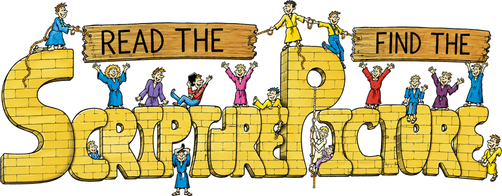

Built with care
Small, focused apps with clear purpose, gentle pacing and privacy-friendly design.
Good Steward Apps is an independent Christian app studio creating warm, thoughtful experiences for families, learners and curious explorers.
The studio style is bright, illustrated and inviting, while the site gives visitors the confidence of a polished indie developer.
Small, focused apps with clear purpose, gentle pacing and privacy-friendly design.
A hand-drawn look that suits ScripturePicture and leaves room for future family-friendly apps.
Visitors can share suggestions so the app can grow with real user input.

Read the scripture, search the illustrated scene and discover the Bible story hidden in the picture.